Download
Windows
Microsoft Store, installer or zip
The recommended way: the package is signed by Microsoft, so Windows shows no SmartScreen warning, and the Store keeps it up to date.
Or, from the latest release, the installer (-setup.exe, no administrator rights needed) or the zip to extract anywhere; both update themselves. Windows may warn you the first time: click More info, then Run anyway.
Flatpak
Any Linux distribution, Fedora Atomic included
The browser downloads a small file: open it and your software center offers EyeCanSee, from its own repository signed by the developer. Or in a terminal:
flatpak install https://flatpak.montinaro.info/eyecansee.flatpakrefFlatpak not set up yet? Follow the guide for your distribution first. More on the Flatpak page.
Fedora Workstation
Fedora 43 and later
From the COPR repository: updates arrive with the system ones.
sudo dnf copr enable iosonopiero/eyecansee
sudo dnf install eyecanseeHEIC photos also need libheif-freeworld from RPM Fusion.
AppImage
No installation, Linux from 2022 on
The .AppImage from the latest release: make it executable and run it, nothing else to install. It updates itself.
For the applications menu, open it with Gear Lever: it keeps updating itself there too.
What it does
Browse everything the same way
Folders, external disks and USB sticks, SFTP, FTP and FTPS servers, Android phones and cameras over USB. No import and no database: open a folder and the photos are there. Bookmarks bring any of them back with one click.
Viewer
Zoom, preloading so moving between images never waits, photo details (camera, exposure, date, place on a map), videos with sound, smooth from a server too when the connection is fast enough, and a full-screen slideshow.
Copy between devices
Copy and move from the phone to a disk or a server and back, rename, delete with a trash on every device. Downloads from a distant SFTP server come close to FileZilla's speed on the same computer: about 15 MB/s from a Hetzner Storage Box.
Convert
Images to JPEG, PNG, WebP, AVIF, TIFF and more, many files at once; videos with FFmpeg, on the graphics card when it can, keeping the metadata and the GPS track of dashcams and drones.
Duplicates
Finds identical photos, videos and audio files in a folder and its subfolders, on any device, and always keeps at least one copy.
Formats
HEIC, AVIF, JPEG XL, PSD, Camera RAW from many brands, and rarer formats through ImageMagick. English and Italian, light and dark theme.
Image editor
Arrows, text, shapes, numbered steps and stamps on images, solid boxes that cover private data leaving nothing of it in the saved file, filters, crop and rotation; also on phones and servers. More about the editor.
3D models, STEP and IGES
STL, OBJ, PLY, glTF, FBX, 3MF and more, IFC buildings, and STEP, IGES and BREP from mechanical CAD, with an engine downloaded once. Shown with their colours and textures, drawn by the graphics card, and exported to glTF, OBJ, PLY or STL.
CAD drawings: DWG, DXF and HP-GL
DWG and DXF from AutoCAD and other CAD programs, and HP-GL plot files, sharp at any zoom, with layers, dimensions and texts and the drawing's real size; exported as images, SVG, or from DWG to DXF and back.
Image editor

Ctrl+E opens an image in the editor, also one on a phone or a server. Saving makes a copy next to the original with its metadata, or overwrites the original after putting it in a trash; on a phone or a server, if sending fails, the result stays on the computer. Ctrl+C copies it to paste in another app.
Mark up
Lines and arrows (also curved), rectangles, ellipses, freehand, highlighter, spotlight, text (also along a curve), speech bubbles, numbered steps, stamps and a magnifier.
Cover private data
Solid boxes: nothing of what they cover is left in the saved file. Blur and pixelate too, with a warning that they are not enough to hide text.
Change, then save
Filters on a part or on the whole image, a selection to copy, cut and paste, crop and rotate by any angle, an eyedropper. Everything can be moved and undone until you save.
Illustrated guide
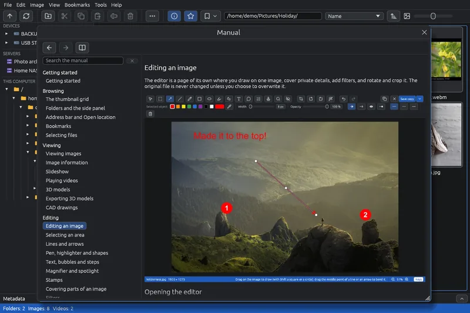
Press F1 at any time: the guide opens inside EyeCanSee on the page about what is on screen, whether the grid, the viewer, the editor with the tool in use, a window or the address bar. F1 again closes it; Help > Manual opens the contents.
Every feature, with pictures
45 pages in English and Italian, from getting started to the keyboard shortcuts, the supported formats and the known limits, with screenshots of the program.
Search every page
The search field is ready as soon as the guide opens. It looks through every page, ignoring capitals and accents, and highlights the words found.
As in a browser
Back and forward, links from one page to another, the contents always at hand. The same pages can also be read on GitHub.
Phones over USB: the numbers
A folder of 400 files on a POCO X7 Pro over USB, Fedora 44, cold caches.
On Linux EyeCanSee talks to the phone directly over USB with mtp-rs, a pure Rust MTP library, instead of going through the file manager.
Screenshots

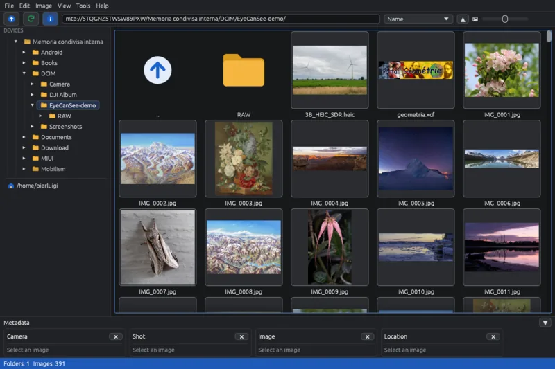

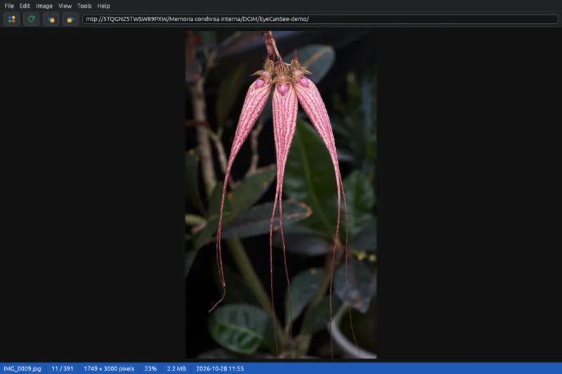

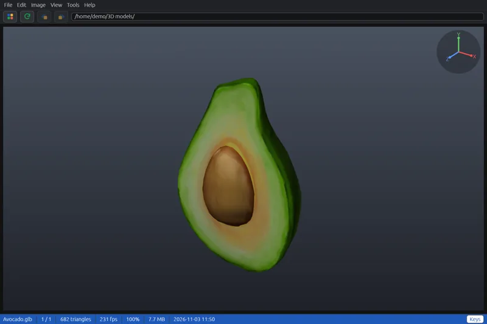

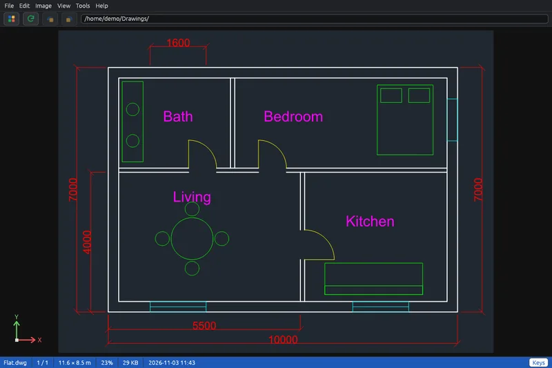

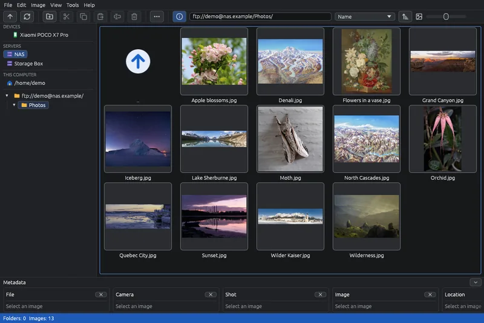

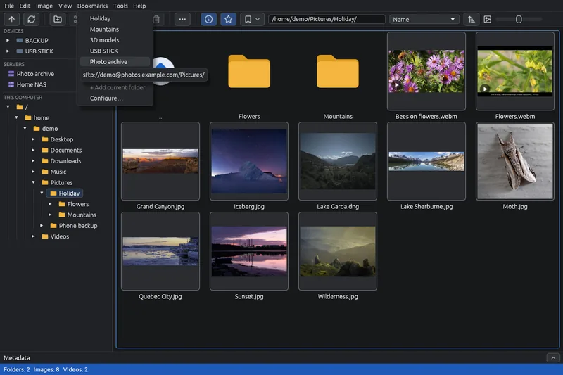

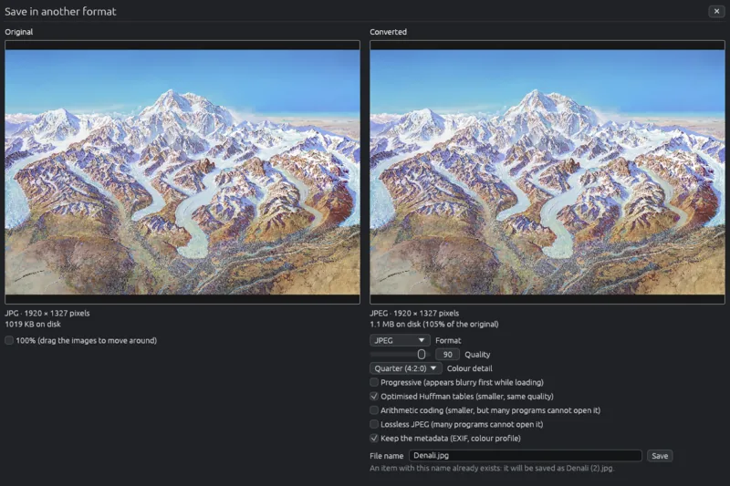

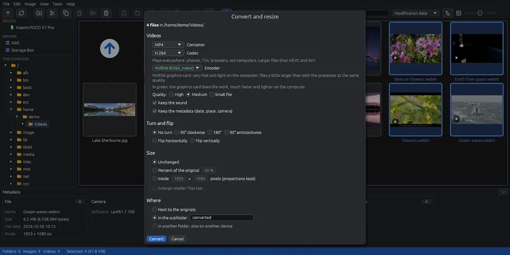

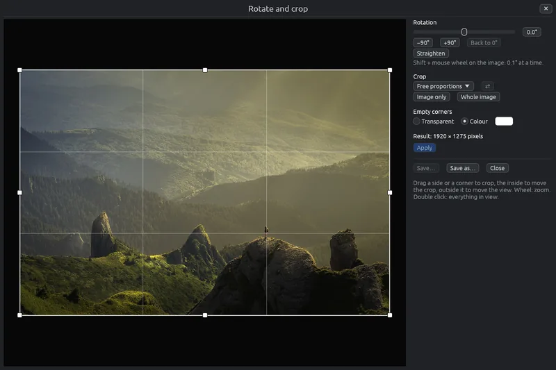

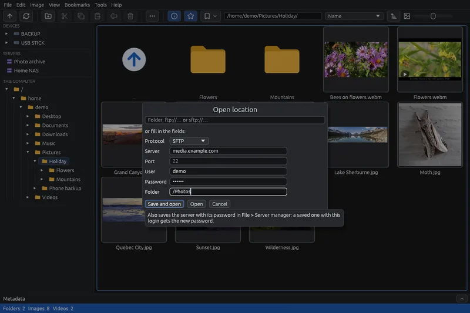

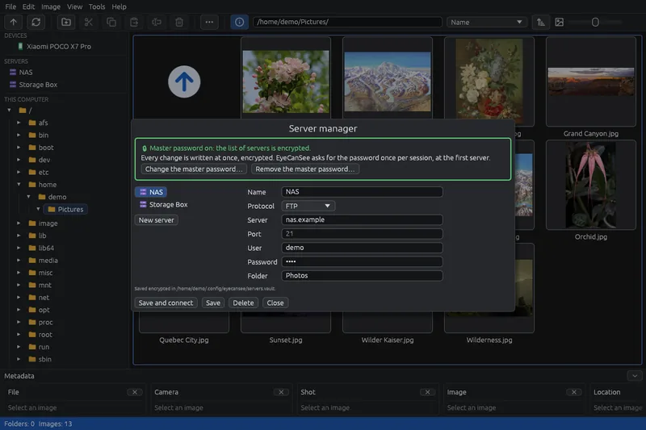

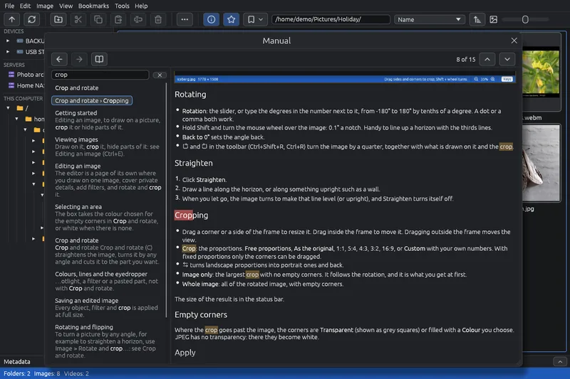
Trust
- Every release file is signed with minisign, and the app installs only updates with a valid signature.
- A save or a paste that fails, for example on a full disk, leaves no half-written file: a file being replaced stays as it was until the new one is complete.
- Free and open source, GPL-3.0-or-later.
- No ads, no account, and the app collects no data; the website counts its visits without cookies: see the privacy policy.
- I am not a programmer any more: I wrote EyeCanSee with the help of Claude Code, and I test every feature on my own computers and devices before it goes in.